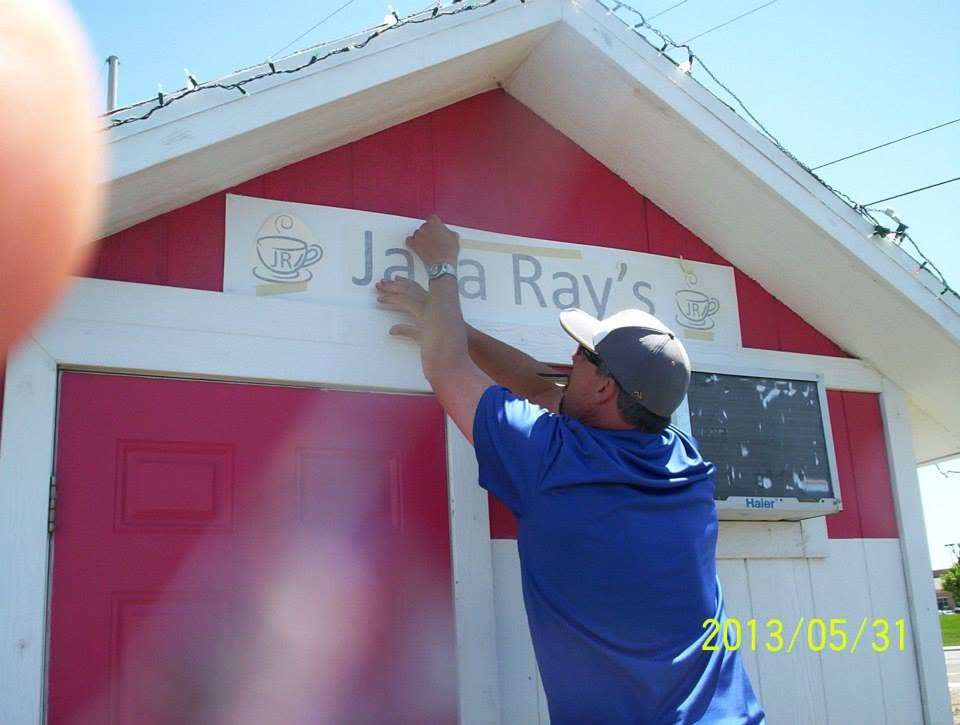

Good coffee.
Espresso, a smooth latte, something sweet, or something over ice. A freshly made drink to suit your morning.
A SMALL STAND IN NAMPA, IDAHO
We’re Java Ray’s. An independent coffee stand, a familiar face at the window, and a little something to look forward to on your morning drive.

HELLO, WE’RE JAVA RAY’S.
At Java Ray’s, the name on the stand is the face you’ll meet at the window. Ray is the owner and barista behind this little coffee spot on East Franklin Road.
Our customers talk about the coffee, of course. But they also talk about the conversations, the kindness, and the small things that make a quick stop feel personal. That’s the part we love.
Whether you live around the corner or you’re passing through Nampa, there’s a cup here with your name on it.
THE THINGS WE COME BACK TO
Espresso, a smooth latte, something sweet, or something over ice. A freshly made drink to suit your morning.
A hello from Ray and a little conversation while your coffee is made. A small stand makes room for a personal welcome.
Independently owned and part of the neighborhood. A local stop you can make part of your weekday routine.

SMALL PLACE. GOOD PEOPLE.
A familiar order. A quick chat. A coffee that’s just what you needed. It doesn’t have to be complicated to be a good part of your day.
“The best coffee drinks ever! Locally owned and just a super nice man!”Darina Boucher Google customer review
WE’LL PUT THE COFFEE ON
5520 E Franklin Rd, Nampa · Weekdays, 6 AM–noon.